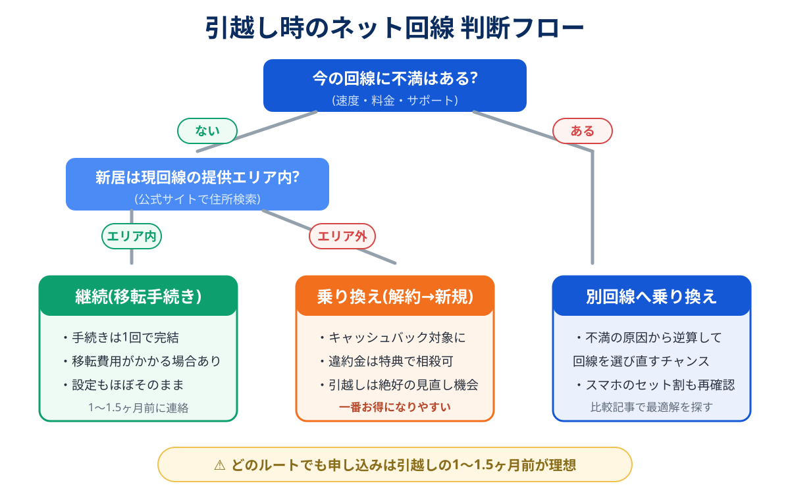

引越しが決まると、住所変更や電気ガスの手続きに紛れて、つい後回しになるのがネット回線。ところが後回しにした結果、「新居に入ったのにネットが1ヶ月使えない」は、引越しの失敗談として最も定番のパターンです。
この記事では、引越し時のネット回線について「継続・乗り換え・新規、どれにすべきか」を3分で判断できるフローと、そこからの具体的な手順をまとめます。
今の回線に不満がなく、新居も提供エリア内なら「継続(移転手続き)」。それ以外は「乗り換え」が得です。移転には手数料や再工事費がかかるのに特典はほぼゼロ。一方、乗り換えなら新規向けキャッシュバックの対象になります。どうせ工事するなら、特典のつく方を選ぶのが合理的です。
そしてどのルートでも、手続き開始は引越しの1〜1.5ヶ月前。ここだけは今日動いてください。
30秒でわかる判断フローチャート

ポイントは2つの質問だけです。
- 今の回線に不満はあるか?(速度・料金・サポート)
- 新居は今の回線の提供エリア・対応物件か?(公式サイトの住所検索で1分)
両方クリアなら継続、どちらかが引っかかるなら乗り換え。シンプルにこれだけです。
継続 vs 乗り換えの費用比較
「手続きがラクだから継続」と決める前に、お金の面を見ておきましょう。
| 項目 | 継続(移転) | 乗り換え |
|---|---|---|
| 手数料 | 移転事務手数料(2,200〜3,300円程度) | 解約違約金(月額1ヶ月分程度※)+事務手数料 |
| 工事費 | 移転先の工事費(割引が効かないことが多い) | 「実質無料」キャンペーン対象になりやすい |
| キャッシュバック | 基本なし | 2万〜7万円前後の対象 |
| 手間 | 少ない(手続き1回) | やや多い(解約+新規) |
※ 2022年7月以降の契約の場合。それ以前の契約は違約金が高いことがあるため要確認。工事費残債がある場合は別途精算。
引越しまでのタイムライン(いつ何をする?)
-
1.5ヶ月前:方針決定+申し込み
上のフローで継続か乗り換えかを決め、すぐ申し込み(移転連絡)。工事日の希望を早く押さえるほど、入居日に間に合う確率が上がります。
-
1ヶ月前:工事日の確定
入居日当日〜数日以内に工事日を設定できれば理想。立ち会いが必要なので、引越し当日の家具搬入と時間が被らないように。
-
1〜2週間前:機器・つなぎの準備
Wi-Fiルーターの手配、テザリングのデータ容量確認、必要ならレンタルWi-Fiの手配。旧居の回線の解約日(乗り換えの場合)もここで確定。
-
引越し当日〜:開通・撤去
新居で開通工事に立ち会い、速度を確認。乗り換えの場合、旧回線は新居の開通確認後に解約し、レンタル機器を返却します。
「継続」の手順
継続と決めたら、手続きは1本です。
- 契約中の回線のマイページまたは電話で「移転手続き」を申請
- 移転先住所と入居日を伝え、新居での工事日を調整
- 旧居の撤去工事が必要な場合は日程調整(賃貸は原状回復の要否を管理会社に確認)
- 新居で開通工事に立ち会って完了
費用は移転事務手数料+新居の工事費が基本。同一フレッツ網エリア内の移転なら工事費が軽くなる場合もあります。
「乗り換え」の手順
乗り換えの場合は「新居用の新規申し込み」+「旧居の解約」の2本立てです。順番のコツは1つだけ——新居の開通日が確定してから旧回線の解約日を決めること。
- 新しい回線を選ぶ(7社比較を参考に、新居の住所でエリア検索)
- 新居を設置先住所として申し込み、入居直後の工事日を予約
- 旧回線に解約連絡(引越し日以降の解約日を指定)
- 新居で開通確認 → 旧回線の機器を返却
キャッシュバックの受け取り条件の確認と落とし穴対策は乗り換え完全ガイドで詳しく解説しています。引越しはただでさえ出費がかさむ時期なので、ここで数万円回収しておきましょう。
開通までのつなぎ回線はどうする?
工事が入居に間に合わない場合の選択肢は3つです。
| 方法 | 費用 | 向いているケース |
|---|---|---|
| スマホのテザリング | 追加費用なし(容量消費) | 数日間のつなぎ。大容量プラン・楽天モバイルなら現実的 |
| 事業者の無料レンタルWi-Fi | 無料の場合あり | 開通までのレンタル制度がある回線を申し込んだ場合 |
| ホームルーター | 月額3,000〜5,000円 | 工事不可物件・工事が1ヶ月以上先になる場合。そのまま本回線にする手も |
「そもそも工事ができない・したくない」物件なら、ホームルーターを本回線として使う選択肢もあります。コンセントに挿すだけで当日から使えるので、引越しとの相性は抜群です。詳しくは工事不要WiFi比較をどうぞ。
物件タイプ別の注意点
賃貸マンション・アパート
- 光コンセントの有無を内見時に確認(あれば無派遣工事で早く開通できる可能性)
- 工事には管理会社・大家の許可が必要な場合がある。早めに確認
- 「インターネット無料」物件は速度が十分か口コミを確認。仕事で使うなら自前回線の検討を(詳しくはこちら)
戸建て(新築)
- 新築は住所がデータベース未登録で申し込みに時間がかかることがある。2ヶ月前行動が安心
- 外壁への引き込み方法(エアコンダクト・穴あけ)を工事前に確認しておくとスムーズ
よくある質問
何日前までに手続きすればいいですか?
開通までのつなぎはどうすれば?
引越しは乗り換えのチャンスというのは本当?
まとめ:物件が決まった日が、回線を申し込む日
- 判断は2問だけ:今の回線に不満はあるか/新居はエリア内か
- 不満がある・エリア外なら乗り換えが得(特典の対象になる)
- 手続き開始は1〜1.5ヶ月前。繁忙期は2ヶ月前
- つなぎはテザリング・無料レンタル・ホームルーターの3択
- 各社公式サイトの移転手続き・キャンペーンページ(2026年8月確認)
- 運営者自身の引越し・移転手続きの経験